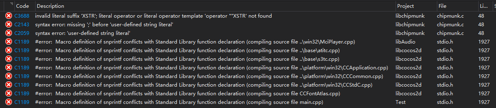
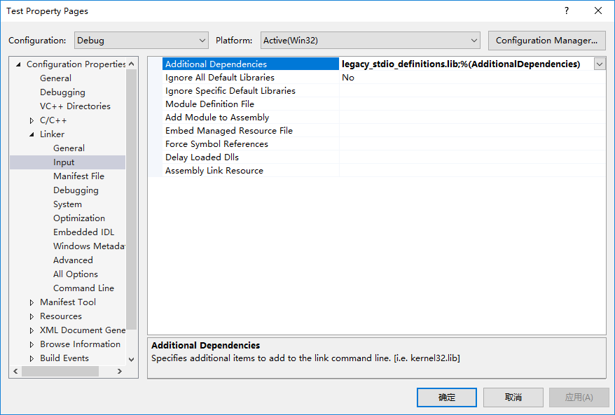

前言
cocos2dx3.2应该算是大家比较熟知的一个版本了，相比后续的版本，这个版本生成的apk比较小，重点是支持WP8（软粉一枚(ง •_•)ง），然而这个版本生成的项目在VS2015上编译不过。接下来介绍如何修改使VS2015能够顺利编译项目。
准备工作
用cocos2dx3.2创建一个项目（以下用YourProject表示项目路径），创建成功后用VS2015打开proj.win32下的sln文件，打开时会弹出一个升级VC编译器和库的提示，点确认即可。之后编译整个解决方案，不出意外的话会看到这些报错：

解决错误
接下来解决这些编译报错，双击报错信息可以定位到所在文件以及行。
无效文本后缀XSTR
报错文件为YourProject\cocos2d\external\chipmunk\src\chipmunk.c(48)。查找报错信息发现，VS2015新增了用户定义文本支持，详细见MSDN:用户定义的文本，这里XSTR(CP_VERSION_MAJOR)"."XSTR(CP_VERSION_MINOR)"."XSTR(CP_VERSION_RELEASE)后面两个XSTR由于没有空格隔开，所以被认为是用户定义的文本，但实际上没有XSTR这个定义，所以报错。解决办法就是在分别在后面两个XSTR前面加上空格，即：XSTR(CP_VERSION_MAJOR)"." XSTR(CP_VERSION_MINOR)"." XSTR(CP_VERSION_RELEASE)。
snprintf宏定义冲突
Macro definition of snprintf conflicts with Standard Library function declaration这条报错信息的意思是snprintf宏定义和标准库定义冲突，说明cocos2dx在内部定义了snprintf宏。查看输出可以发现在这条报错信息前面还有一条警告信息，如下：1
21>C:\Program Files (x86)\Windows Kits\10\Include\10.0.10240.0\ucrt\stdio.h(1925): warning C4005: \'snprintf\': macro redefinition (compiling source file ..\base\atitc.cpp)
1> YourProject\cocos2d\cocos\platform\win32\CCStdC.h(53): note: see previous definition of \'snprintf\' (compiling source file ..\base\atitc.cpp)
定位到CCStdC.h文件53行，可以看到snprintf宏的定义，解决办法就是把#define snprintf _snprintf注释掉。1
2
3
4
5
6
7
8
9
10
11
12
13
14
15
16// for math.h on win32 platform
//#define snprintf _snprintf // 注释掉这一行即可
无法解析的外部符号
编译错误解决了之后，重新编译发现有链接错误：1
2
3
43>libpng.lib(pngerror.obj) : error LNK2019: unresolved external symbol __imp____iob_func referenced in function _png_default_error
3>libtiff.lib(tif_unix.obj) : error LNK2001: unresolved external symbol __imp____iob_func
3>libjpeg.lib(jerror.obj) : error LNK2019: unresolved external symbol ___iob_func referenced in function _output_message
3>MSVCRTD.lib(vsnprintf.obj) : error LNK2001: unresolved external symbol __imp___vsnprintf
__iob_func
出现__iob_func链接错误的原因是早期VS版本是用__iob_func来定义stdin、stdout和stderr宏的，而VS2015是用__acrt_iob_func定义（以SDK 10240版本为例，三个宏定义在c:\Program Files (x86)\Windows Kits\10\Include\10.0.10240.0\ucrt\corecrt_wstdio.h）。有以下两种解决办法：
- 自行编译libpng、libtiff和libjpeg生成VS2015版本的lib文件；
- 从cocos2dx最新版本中拷贝libpng、libtiff和libjpeg的win32版本lib文件及头文件到cocos2dx3.2对应目录
YourProject\cocos2d\external（不希望下载cocos2dx最新版本？查看结束部分下载我提供的附件）；
拷贝完成之后修改YourProject\cocos2d\cocos\platform\win32\CCPlatformDefine.h，在#endif // CC_TARGET_PLATFORM == CC_PLATFORM_WIN32之前加上如下代码：1
2
3
4
5
6
7
8
9
__vsnprintf
出现这个问题的原因参考MSDN Social：Updated to VS 2015 and now get Unresolved External Errors，解决办法是在启动项目属性中的链接器->输入->附加依赖项中加上legacy_stdio_definitions.lib。

结束
到这里所有问题都已经解决，可以用VS2015愉快的写代码了😘
最后附上cocos2dx3.14.1版本的libpng、libtiff和libjpeg库相关文件，包含三个库的win32版本include和prebuilt目录，下载地址点这里，下载之后直接替换你的项目下的cocos2d目录即可。